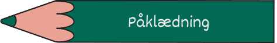
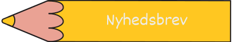

Alt det du skal vide for dit barn kan få en tryg og sjov hverdag hos os
🕒Mødetider
Ved indmeldelse på fritidshjemmet udleveres en seddel med børnenes komme/gå tider, der skal udfyldes. Disse tider følger vi, når børnene sendes hjem.
Sker der ændringer i jeres barns mødetider, skal I:
Enten ringe, eller sende en seddel med barnets navn, dato og forældreunderskrift. Det er vigtigt, at vi får besked, så der ikke opstår tvivlssituationer!
📱Komme/gå på iPad
Selvregistrering på iPad (Alia):
Når jeres barn møder ind, skal de selv trykke sig ind på iPad'en.
Det samme gælder, når barnet går hjem eller bliver hentet.
⛔Ansvarsfordeling
Fritidshjemmet har ikke ansvar for børnenes færden til og fra institutionen – dette ansvar ligger hos jer som forældre.
🔔Husk at giv besked
Husk at give besked, hvis jeres barn er syg eller holder fri.
Giv besked via ALIA inden kl. 12.00 for at spare tid og sikre, at vi har den nødvendige information.
Det er vigtigt for personalet, så vi undgår at forstyrre jer på arbejdet og samtidig undgår unødig forvirring for jeres barn.

👕Praktisk tøj
Sørg for, at børnene har tøj med til al slags vejr.
Der skal altid være skiftetøj i fritidshjemmet.
En fleece-trøje anbefales varmt – hele året rundt.
🗄️Glemt tøj
Tøj, der bliver glemt, lægges i kommoden ved indgangen.
Tøj, der ikke afhentes, bliver afleveret til genbrug.
🔍Vigtigt at vide
Vi har ingen forsikring, der dækker private ejendele som tøj, legetøj osv.
Husk at skrive navn i tøjet!
Medbragt legetøj er på eget ansvar.

På Katholt fritidshjem udgiver vi et 'Nyhedsbrev' 3 gange årligt, som giver et levende indblik i livet på fritidshjemmet.
I nyhedsbrevet finder man blandt andet:
Nyttige informationer.
Spændende historier
Små dagligdags fortællinger
mm.
Dette er en oplagt måde for både børn og forældre at følge med i hverdagens store og små begivenheder.
📌Hold dig opdateret
I garderoben finder du opslagstavlen, hvor vi løbende deler vigtige informationer. Her kan du få et hurtigt overblik over nyheder, kommende aktiviteter og praktiske beskeder.
Det er en god idé at kigge forbi opslagstavlen regelmæssigt, så du ikke går glip af noget vigtigt.
Derudover opdaterer vi også løbende på:
Alia.
Vores hjemmeside.
Ved at holde øje begge steder sikrer du dig, at du altid er opdateret med de nyeste informationer.
📨Beskeder via Alia
Vi skal meget gerne senest have beskeder via Alia kl. 12.00 dagligt, eftersom vi registrerer, inden at alle børn kommer fra skole.
👀Hold øje med ny information
Vær dagligt gerne ekstra opmærksom på muligvis nyt.
Informationer tilsendes pr. mail, så sørg for at opgive jeres mailadresse.